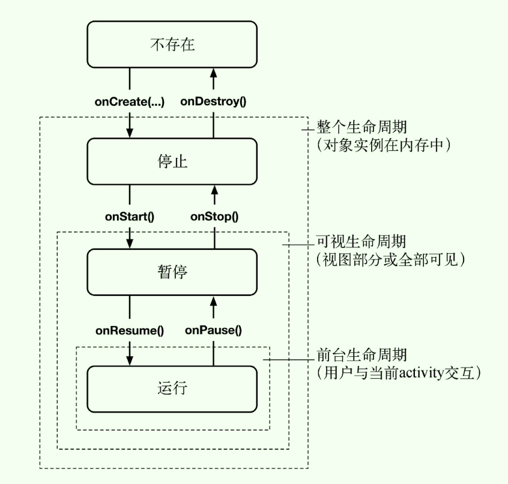

- 第1章 Android开发初体验
- 第2章 Android与MVC设计模式
- 第3章 activity的生命周期
- 第4章 Android应用的调试
- 第5章 第二个activity
- 第6章 第Android SDK版本与兼容
第1章 Android开发初体验
1.4 用户界面设计
布局XML文件的根元素组件必须指定Android XML资源文件的命名空间属性xmlns:android（此处属性值为
http://schemas.android.com/apk/res/android）；android:layout_width、layout_height属性：
- match_parent：视图与其父视图大小相同，(之前已废弃的fill_parent等价于此）；
- wrap_content：视图根据其显示内容自动调整大小；
字符串资源
一个默认名称为string.xml（可取其他名称）的XML文件，存放在app/res/valus/目录下；
</resources><string name="true_button">True</string></resources>一个项目也可以有多个字符串文件，只需将这些文件放app/res/valus/目录下，含有一个resources根元素及多个string子元素即可，应用就能找到并正确使用它们；
定义好后，引用时使用@string/NAME；
1.5 从布局XML到视图对象
AppCompatActivity是Activity的一个子类，为了Android旧系统提供兼容性支持；
Activity的
public void setContentView(int layoutResID)方法：根据传入的布局资源ID，生成该布局的视图，其包含的组件也随之实例化，并放置在屏幕上；资源是应用非代码形式的内容（如图片、音频、XML文件），都放置app/res的子目录下，布局资源文件在app/res/layout下，字符串资源文件在res/values下；
可以使用资源ID在代码中获取相应的资源，如R.layout.activity_quiz（activity_quiz.xml的资源ID）、R.string.app_name；
R.java文件是项目中自动生成的包含所有资源ID；修改相关资源后，R.java会自动更新（有时失效）；
Android自动为布局文件、各个字符串生成资源ID，但是布局文件中的组件需要手动设置
android:id属性后才生成相应的资源ID；- 在设置该属性值时，需要添加+标示，如android:id="@+id/true_button"；
- 布局文件中引用时则不需要添加+，如@id/true_button；
- 代码中引用时使用
R.id.xxx，如R.id.true_button；
1.6 组件的实际应用
Activity的
public View findViewById(int id)：根据资源ID返回已生成的组件视图对象（注意要类型转换）；Android应用属于典型的事件驱动类型，应用启动后即开始等待行为事件的发生；为响应某个事件而创建的对象叫作监听器，监听器就是实现特定监听接口的对象，比如监听点击事件，需要实现View.OnClickListenter接口；
btn.setOnClickListener(OnClickListener)就是给btn设置监听对象，建议使用匿名内部类来实现监听对象；
1.7 创建提示消息
Toast类的
public static Toast makeText(Context context, int resId, int duration)：- context参数通常是Activity的一个实例（Activity本身就是Context的子类）；
- resId参数是toast要显示字符串消息的资源ID（Toast必须借助context才能找到并使用字符串的资源ID）；
- duration参数同时是两个Toast常量的一个，用来指定停留时间；
- 创建一个toast；之后再调用show()方法在屏幕上显示Toast消息；
在匿名内部类中调用Toast的makeText()方法时，注意传入的context参数不能是this（此时的this是匿名类监听器），应该是XXActivity.this；
1.9 深入学习：Android编译过程
在XXActivity类的onCreate()方法中调用setContentView()方法时：XXActivity会使用LayoutInflater类实例化布局文件中定义的每一个View对象（基于反射机制）；
处理在XML文件中定义视图外，也可以在Activity中使用代码创建视图类（但是建议展现层与逻辑层分离）；
第2章 Android与MVC设计模式
2.1 创建新类
- 生成getter、setter方法注意事项：
- Android的命名规范是变量以m前缀、静态量以s前缀；若直接Generate Getter and Setter则生成getter、setter方法时会带相关前缀，如getMText()、setMText()；
- Setting->Editor->Code Style->Java->Code Generation勾选“Prefer longer names”并在相应项输入m、s，取消生成代码时带相关m、s前缀；
2.2 Android与MVC设计模式
- Android中的MVC
- M通常是我们创建的定制类，V是Android自带的视图类和我们定制开发的视图类，C是Activity、Fragment、Service子类；
- M对象与V对象是不能直接交互的；
2.6 添加图标资源
图标资源主要分为以下像素密度屏幕：mdpi（约160dpi）、hdpi（约240dpi）、xhdpi（约320dpi）、xxhdpi（约480dpi）；
所有大小的图片资源都会被安装在设备中，Android系统知道如何为不同设备提供最佳匹配；若应用不包含设备对应的像素密度的图片，Android系统在运行时会自动找可到可用的图片资源，并针对该设备进行适配；
将不同像素密度的图片资源（文件名必须是小写且无空格，后缀名为png、jpg、gif）放到对应的res/drawable-mdpi、drawable-hdpi、drawable-xhdpi、drawable-xxhdpi目录中，Android会自动为其分配资源ID；图片资源ID不需要按照屏幕密度匹配引用，系统知道如何显示，直接引用即可；
在XML资源文件中，通过资源类型和资源名称，可引用其他资源；比如，以@string/开头的定义是引用字符串资源，以@drawable/开头的定义是引用drawable资源；
2.9 挑战练习：从按钮到图标按钮
- ImageButton继承于ImageView，Button继承于TextView；
第3章 activity的生命周期
3.0. 概述
每个Activity实例都有其生命周期，其在运行（前台可见）、暂停（可见）、停止（不可见）状态间进行转换；
每次状态转换都会有对应的Activity方法将状态改变的消息通知给activity（onCreate、onStart、onResume、onPause、onStop、onDestroy这些方法由系统调用，不可自己手动调用；覆盖这些方法时需先调用super方法）；
通常重写onCreate(Bundle)方法，进行实例化组件并将它们放置在屏幕上（调用setContentView(int)方法）、引用已实例化的组件、为组件设置监听器以处理用户交互、访问外部模型数据；

3.1 日志跟踪理解activity生命周期
Android的android.util.Log类能够发送日志信息到系统级别的共享日志中心，其有几个日志记录方法，比如
public static int d(String tag, String msg)实例解析
- a. Activity启动时，依次调用
onCreate、onStart、onResume方法； - b. 按Home键后，依次调用
onPause、onStop方法；（Activity不销毁，能存活多久无法保证，系统回收内存时会先销毁那些停止的Activity；系统Settings中启用Don’t keep activities选项，此时也会调用onDestroy方法） - c. 从最近应用列表中启动，依次调用
onStart、onResume方法； - d. 按退出键，依次调用
onPause、onStop、onDestroy方法，Activity被销毁； - e. 关闭屏幕，处理方式和按Home键一样；
- a. Activity启动时，依次调用
若当前Activity界面被完全或部分遮挡（如弹出窗口），那么其会被系统暂停，用户无法同其交互，弹出窗口关闭后会继续运行；
3.2 设备旋转与activity生命周期
旋转设备会改变
设备配置（Device Configuration）；设备配置是用来描述设备当前状态的一系列特征（屏幕方向、密度、尺寸、键盘类型、底座模式、语言等）；为匹配不同的设备配置，应用会提供不同的备选资源，如适配屏幕分辨率添加多套图片资源；
在运行过程中，设备配置发生改变会触发使用可能存在的更合适的资源来匹配新的设备配置，如旋转屏幕会加载新的布局文件，即当前的Activity被销毁并重新创建；注意有些设备配置是固定的，比如屏幕密度；
创建水平模式布局：
- a. 右键点击res目录后，选择新建
Android resource directory，Resource type选择layout，Source Set保持main不变； - b. 将
Available qulifiers中的Orientation移到选择区中，之后Screen Orientation选择Landscape，并确保目录名显示为layout-land； - c. 点击OK即创建了res/layout-land，land后缀名是配置修饰符的一个例子；
- d. 之后就可以在res/layout-land创建水平模式的布局文件了（或者从res/layout中复制布局文件再修改）；
- a. 右键点击res目录后，选择新建
当设备处于水平方向时，系统会在res/layout-land目录中寻找布局资源，若没有则使用res/layout目录下的；其他情况在res/layout目录下寻找；
不同屏幕方向的布局资源文件必须是相同的文件名，这样才能以同一资源ID被引用；
FrameLayout子视图的位置排列取决于它们各自的android:layout_gravity属性；
3.3 保存数据以应对设备旋转
在应用运行中，只要设备配置发生变化，Android就销毁当前activity并再创建新的activity；
activity的
protected void onSaveInstanceState(Bundle outState)方法（注意别重写错了）：- 在按Home键、设置配置发生变化后两种情况下，activity在调用onStop()方法之前系统都会调用此方法；
- 按后退键不会，按后退键表示告诉Android该activity完了要将其从内存中抹掉，自然也就没有必要重建保存数据了；
- 该方法的默认实现就是将所有activity视图的状态数据保存在Bundle对象中；
Bunle是存储字符串键与限定类型（基本数据类型、实现Serializable/Parcelable接口的对象）值之间映射关系（键值对）的一种结构，相关方法如putInt、getInt；
不建议在Bundle中保存定制类对象，因为取回的对象可能已经过时了；
可通过覆盖onSaveInstanceState()方法，将一些数据保存在bundle中，然后在onCreate()方法中取回这些数据；比如处理屏幕旋转的数据保存；
3.4 再探activity生命周期
重写onSaveInstanceState()方法不仅仅用于处理与设备旋转相关的问题，也可以处理以下场景：
- 当用户离开当前activity用户界面，或Android需要回收内存时activity被销毁（如用户按了HOME后播放视频或玩游戏）；
- Android从不会为了回收内存去销毁正在运行的activity（处于运行或暂停状态），而是会销毁处于停止状态的activity；
- 此时不用担心数据丢失，系统会调用onSaveInstanceState()方法将用户数据保存到Bundle对象中，之后系统会将该Bundle对象放入
activity记录中； - 在需要恢复activity时，操作系统可以使用暂存的
activity记录重新激活activity；
注意，activity进入
暂存状态并不一定需要调用onDestroy()方法；因此常见的做法是：- 重写onSaveInstanceState()方法，在Bundle对象中保存当前activity的小的或暂存状态的数据；
- 重写onStop()方法，保存永久性数据，如用户编辑的文字等；onStop()方法被调用后，activity随时可能会被系统销毁，所以用它保存永久性数据；
当用户按了后退键后，系统会彻底销毁当前的activity，此时暂存的activity记录也被清除；此外系统重启，暂存的activity记录也会被清除；
3.5 深入学习：activity内存清理现状
- 低内存状态下，Android直接从内存清除整个应用进程（包含所有的activity），目前还做不到只销毁单个activity；
第4章 Android应用的调试
4.1 异常与栈跟踪
- 调试方法
- a. 查看异常调用栈；
- b. 使用Log；
- c. 使用断点（Run->View Breakpoints管理断点， 也可以设置异常断点捕获特定类型的异常）;
4.2 Android特有的调试工具
Android Lint：
- 静态分析器，检查所有潜在的问题，比如使用错误的资源ID导致错误的类型转换，
mButton= (Button)findViewById(R.id.a_text_view);； - Anylyze->Inspect Code手动运行Android Lint；
- 静态分析器，检查所有潜在的问题，比如使用错误的资源ID导致错误的类型转换，
R文件错误处理方式：
- a. 检查资源文件XML的有效性；
- b. 清理工程；
- c. 使用Gradle同步项目；
- d. 运行Android Lint检查；
第5章 第二个activity
5.1 创建第二个activity
创建新的activity至少涉及三个文件：Java类、XML布局和应用的manifest文件；
tools:text属性用于在Android Studio中预览TextView的显示，运行时显示还是使用android:text属性；项目的app/manifest目录中的AndroidManifest.xml是用来向Android操作系统描述应用信息，比如声明activity：
<activity android:name=".XXActivity"></activity>，name可取完整包路径，也可取.类名；
5.2 启动activity
activity的
public void startActivity(Intent intent)- 一个activity启动另外一个activity的最简单的方式；
- 调用请求会发给了操作系统的ActivityManager，ActivityManager负责创建Activity实例并调用其onCreate()方法；
- 参数intent标示启动哪个Activity；
Intent对象是Component用于与操作系统通信的一种媒介工具；Component有activity、service、broadcast receiver、content provider；
构造函数
public Intent(Context packageContext, Class<?> cls)：- Class参数告诉ActivityManager启动哪个activity（其会先检查指定的Class是否在manifest配置文件中声明过，若没有则抛出ActivityNotFoundException异常）；
- Context参数告诉ActivityManager在哪里可以找到它；
显式与隐式Intent
- 通过指定Context与Class对象，然后调用intent的构造方法来创建Intent，则创建的是显式Intent；同一应用中使用显式Intent来启动activity；
- 一个应用的activity若需要启动另一个应用的activity，可以通过创建隐式Intent来处理；
5.3 activity间传递数据
intent extra（传递数据的媒介）：
- extra可以是任意数据，其为包含在Intent中的键值结构数据；
- 可以添加多个extra到同一个intent上；
- 调用intent的
public Intent putExtra(String name, boolean value)给intent添加数据，一个参数是固定的String类型的键，另一个参数值可以是多种数据类型，该方法返回intent自身（可以进行链式编程）； - 调用intent的
public boolean getBooleanExtra(String name, boolean defaultValue)获取extra中的数据；
子activity从父activity获取信息：
- 调用子activity的
getIntent()方法获取由startActivity(Intent)、startActivityForResult(Intent intent, int requestCode)方法转发的Intent对象；之后从中获取信息； - 常用场景技巧：在子activity中创建一个生成intent的静态方法，来提供给父activity调用，这样就不用关心父activity的来源及extra中键的定义，也提高了封装性；
- 调用子activity的
父activity从子activity获取返回信息：
第一步、调用父activity的
public void startActivityForResult(Intent intent, int requestCode)方法启动子activity；- 第一参数Inttent同上述；
- 第二个参数为
请求代码；请求代码是先发送给子 activity，然后再返回给父activity的整数值，由用户定义；在一个activity启动多个不同类型的子activity，且需要判断消息回馈方时就会用请求代码requestCode；
第二步、实现子activity发送返回信息给父activity，有以下两种方法可用：
- a. 子activity调用
public final void setResult(int resultCode)方法； - b. 子activity调用
public final void setResult(int resultCode, Intent data)方法；
- a. 子activity调用
resultCode
- 用于父activity区分子activity的不同操作（如取消、确定等）；
- 可以是预定义的常量
Activity.RESULT_OK（-1，默认值）、Activity.RESULT_CANCELED（0），也可以是自定义的resultCode（写Activity.RESULT_FIRST_USER（1））； - 子activity可以不调用setResult()方法；
- 若没有调用，则操作系统发送默认的resultCode（Activity.RESULT_OK）；
- 若没有调用且按了后退按钮，则操作系统发送Activity.RESULT_CANCELED；
第三步、重写onActivityResult()方法来处理返回结果；点击返回键返回时，ActivityManager会调用父activity的
protected void onActivityResult(int requestCode, int resultCode, Intent data)方法，参数来自于之前启动子activity设置的requestCode和子activity设置的resultCode、intent；
startActivity与startActivityForResult的区别：
- startActivity：仅仅是启动另一个Activity，不会回退到原来的Activity；若想跳回则必须再次调用startActivity来启动原来的Activity；
- startActivityForResult：按返回键可直接回退到原来的Activity，当子Activity执行完finish()方法后，会自动回调
父Activity的onActivityResult()方法；
除了点击返回键退出外，还可以调用activity的finish()方法也能将子activity回退（回退栈弹出）；
5.4 activity的使用与管理
manifest中，XXActivity声明intent-filter子元素被设置为
launcher activity；<intent-filter> <action android:name="android.intent.action.MAIN" /> <category android:name="android.intent.category.LAUNCHER" /> </intent-filter>ActivityManager维护则一个非特定应用独享的
回退栈，所有应用的activity都共享该回退栈；这也是ActivityManager被设计成操作系统级的activity管理器来负责启动应用activity的原因之一；不局限于单个应用，回退栈作为一个整体共享给操作系统及设备使用；
第6章 第Android SDK版本与兼容
6.1 Android SDK版本
- API版本与设备固件版本：
- API 19：KitKat，Android 4.4；
- API 21：Lollipop，Android 5.0；
- API 22：Lollipop，Android 5.1；
6.2 Android编程与兼容性问题
应用模块的build.gradle文件有三个属性值：compileSdkVersion、minSdkVersion、targetSdkVersion；
- compileSdkVersion：独占该文件；
- minSdkVersion、targetSdkVersion虽然也设置在该文件中，但它们的作用是覆盖和设置配置文件AndroidManifest.xml；
SDK最低版本（minSdkVersion）：
- 若设备上的系统版本低于该值，系统将拒绝该应用的安装；
SDK目标版本（targetSdkVersion）：
- 应用是为哪个API级别设计的，多数情况下目标版本就是最新发布的Android版本；
- 新发布的SDK版本可能会改变应用在设备上的显示方式，甚至连操作系统后台运行行为都会受到影响；
- 降低SDK目标版本可以保证，即便运行在高于目标版本的设备上，应用的运行行为仍然和SDK目标版本保持一致，新版本的变化会被忽略；
SDK编译版本（compileSdkVersion）：
- 该设置不会出现在AndroidManifest中；
- minSdkVersion、targetSdkVersion会通知给操作系统，而compileSdkVersion只是开发者与编译器之间的私有信息，用于使用时、编译时查找SDK中的类和方法；
- 当Android新版本发布时，更新SDK编译版本，就可以使用新版本引入的方法和类了；
修改build.gradle文件后，需要同步一下Gradle才能生效（Tools -> Android -> Sync Project with Gradle Files），之后项目重新编译；
若minSdkVersion和compileSdkVersion的差异较大，由此带来兼容问题需要处理；比如，调用了KitKat（API 19）以后的SDK代码的应用，运行在KitKat设备上会崩溃；
受益用于
Android Lint，在低版本系统上调用高版本的API，Android Lint会提示编译错误；Analyze -> Inspect Code手动触发Lint；解决办法：- 提高minSdkVersion；
将高版本API置于检查Android设备版本的条件语句中（运行时检查）；
if (Build.VERSION.SDK_INT >= Build.VERSION_CODES.LOLLIPOP) { // TODO } else { // TODO }
Build.VERSION.SDK_INT为当前运行的设备的版本， Build.VERSION_CODES.LOLLIPOP等常量表示常见的Android版本号； 版本号清单参看网页
http://developer.android.com/reference/android/os/Build. VERSION_CODES.html；
6.3 使用Android开发者文档
Android开发文档：分为设计（UI设计规范）、开发（SDK文档）、发布（应用市场发布），
http://developer.android.com/；开发参考文档左侧，可以选择
API level进行高版本API的过滤；